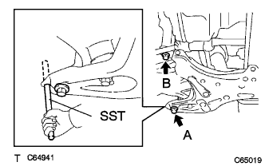
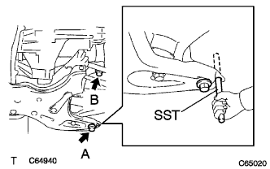
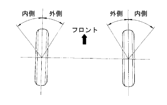

フロントサスペンション アームSUB-ASSY LWR NO.1 LH（4WD） 取り付け |
| 1. フロントサスペンション アームSUB-ASSY LWR NO.1 LH仮締め |
 |
角軸マイナスドライバーを使用して、サスペンションクロスメンバを支点にミッション下部を押してエンジンを傾け、ボルト（フロント側）を挿入する。
|  |
SSTをサスペンションクロスメンバRH側および車両RH側の基準穴に差し込む。
ボルトA、Bの順序で仮締めする。
|  |
SSTをサスペンションクロスメンバLH側および車両LH側の基準穴に差し込む。
ボルトA、Bの順序で仮締めする。
SSTをサスペンションクロスメンバRH側および車両RH側の基準穴に再度差し込み、規定トルクで締め付ける。
SSTをサスペンションクロスメンバLH側および車両LH側の基準穴に再度差し込み、規定トルクで締め付ける。
 |
ボルトおよびナット2個で、エンジンマウンティングインシュレータRRを取り付ける。
ボルト２本およびナットでロワーアームをフロントサスペンションクロスメンバに仮締めする。
ロワーアームのボールジョイント部をステアリングナックルに取り付け、キャッスルナットで締め付ける。
新品のクリップを取り付ける。
| 2. フロントサスペンションメンバ リインホースメント LH取り付け |
ボルト2本で、フロントサスペンションメンバリインホースメントLHを取り付ける。
| 3. フロントサスペンションメンバ リインホースメント RH取り付け |
| 4. フロントスタビライザ ボルト取り付け |
| 5. フロントタイヤ取り付け |
| 6. フロントサスペンション アームSUB-ASSY LWR NO.1 LH本締め |
車両をジャッキダウンして数回上下にゆすり、フロントサスペンションを落ち着かせる。
ボルト（A）を本締めする。
 |
ナットを固定し、ボルト（B）を本締めする。
| 7. タイヤ点検 |
タイヤサイズおよび摩耗状況点検
タイヤ空気圧点検
| 仕様（タイヤサイズ） | 空気圧（前輪·後輪）［kPa｛kgf/cm2｝］ |
|---|---|
| 175/70R14-84S | 220｛2.2｝ |
サスペンションの改造や足廻り各部の損傷点検。
 |
タイヤの振れ点検
関係各部のボルトの締め付け状態点検
関係各部のガタ点検
| 8. 車高点検 |
 |
車両のコーナーを大きく上下に動かし、サスペンションを落ち着かせてから車高を点検する。
| タイヤサイズ | A寸法-B寸法 [mm] | D寸法-C寸法 [mm] |
|---|---|---|
| 175/70R14 | 92 | 39 |
| 9. サイドスリップ点検 |
サイドスリップテスターでサイドスリップを点検する。
基準値外の場合はホイールアライメントを点検する。
| 10. トーイン点検 |
車両をゆすり、車両を安定させる。
車両を直進で5ｍ手押しして前進させる。
 |
トーインゲージの指針高さをフロントホイール軸中心高さに合わせ、タイヤの後ろ側に入れる。
前輪タイヤ各々の後部にトレッドセンターをしるし、マーク間の距離(B寸法)を測定する。
車両をゆっくり押して前進させ、前輪を180°回転させる。
 |
車両前部でマーク間の距離(A寸法)を測定する。
トーインを求める。
| 11. トーイン調整 |
 |
左右のラックエンドのねじ部の長さを測定する。
ラックブーツのクリップをはずす。
タイロッドエンドのロックナットをゆるめる。
ラックエンドねじ部の左右差が基準外の場合は調整を行う。
トーインの測定値がアウト側にはずれる場合は、寸法の短い方のラックエンドを伸ばす方向に調整する。
トーインの測定値がイン側にはずれる場合は、寸法の長い方のラックエンドを縮める方向に調整する。
再度トーインを点検する。
左右のラックエンドを各々の反対方向に同量ずつ回し、トーインが基準値内に入るように調整する。
タイロッドエンドのロックナットを締め付ける。
 |
プライヤーを使用して、クリップを図の範囲に取り付ける。
| 12. ホイール切れ角点検 |
|  |
ターニングラジアスゲージをセットする。
ホイールの切れ角を点検する。
| 内側(点検範囲) | 外側(参考) |
|---|---|
| 39°±2° | 34° |
| 13. キャンバー、キャスター、キングピンアングル点検 |
ホイールキャップまたはセンターオーナメントを取りはずす。
車両を平坦な場所でリフトアップする。
タイヤクランプコンペンセータ(TCK-01)を取り付ける。
タイヤクランプコンペンセータのクランプダイヤルを回し、タイヤクランプアームを広げる。
 |
ダイヤルを回し、下側ツメ2箇所をホイールサイズに合わせホイールリム下部に当て上側ツメをホイールリムに合わせて縮める。
 |
クランプダイヤルを回し、タイヤクランプアームを縮めタイヤに取り付ける。
脱落防止ワイヤーをホイールのエアーバルブに取り付ける。
タイヤクランプコンペンセータを補正する。
 |
タイヤクランプコンペンセータの補正ダイヤルを回してメカゼロライン(赤ライン)の範囲内に合わせる。
 |
キャンバーキャスターキングピンゲージをタイヤクランプコンペンセータの取り付けプレートに取り付け、合わせマークを合わせる。
 |
ホイールを少し回転させ、キャンバーキャスターキングピンゲージの水平気泡が中心になるように合わせ、キャンバーキャスターキングピンゲージの調整ネジでキャスター気泡を0°に合わせる。
 |
ホイールを180°回転させ、キャンバーキャスターキングピンゲージとタイヤクランプコンペンセータの合わせマークを合わせ、水平気泡を合わせる。(*1)
 |
上記状態のキャスター気泡を読み取り、その値の1/2の目盛りになるようにタイヤクランプコンペンセータの補正ダイヤルを回し合わせる。(*2)
前記(*1)、(*2)の手順を繰り返し、キャスター気泡の目盛り位置がホイールを180°正、反転させても、一定の数値目盛りを指示すればキャンバーキャスターキングピンゲージのセットは完了。
ターニングラジアスゲージをセットし、車両を降ろす。
キャンバー、キャスターおよびキングピンアングルを点検する。
| キャンバー | キャスター | キングピンアングル |
|---|---|---|
| -0°40'±45' | 2°00'±45' | 10°15'±45' |
キャンバーキャスターキングピンゲージおよびタイヤクランプコンペンセータを取りはずす。
ホイールキャップまたはセンターオーナメントを取り付ける。
| 14. キャンバー調整 |
車両をジャッキアップして、フロントタイヤを取りはずす。
 |
ボルトをはずし、スピードセンサおよびフレキシブルホースを切り離す。
 |
ショックアブソーバロワー側の取り付けナット2個を緩める。
 |
ショックアブソーバのロワー側を動かして、ボルトとステアリングナックルのボルト穴のガタでキャンバーを調整する。
|
ナット2個を締め付ける。
|
ボルトで、フレキシブルホースおよびスピードセンサを取り付ける。
フロントタイヤを取り付ける。
車両をジャッキダウンして数回上下にゆすり、サスペンションを落ち着かせる。
キャンバーを点検する。
基準値内の場合は、トーイン点検を行う。
基準値外の場合は、ジャッキアップしてフロントタイヤをはずし、スピードセンサおよびフレキシブルホースを切り離し以下の作業を行う。
 |
ショックアブソーバロワー側の取り付けナット2個およびボルト2本を取りはずす。
  |
アジャスティングボルト2本を選択して、車両前方から挿入する。
| アジャスティングボルト | 品番 | ボルト径 (mm) | 調整量 |
|---|---|---|---|
| A | 90105-14146 | 13 | ±15’ |
| B | 90105-14147 | 12 | ±30’ |
| キャンバー調整量 | セットボルト | 90105-14146 | 90105-14147 |
|---|---|---|---|
| -1°00'--45' | 1、2 | ||
| -45'--30' | 1 | 2 | |
| -30'--15' | 1 | 2 | |
| -15'-0' | 1 | 2 | |
| 0'-15' | 1 | 2 | |
| 15'-30' | 1 | 2 | |
| 30'-45' | 1 | 2 | |
| 45'-1°00' | 1、2 |
|
ナット2個を取り付ける。
|
ボルトで、フレキシブルホースおよびスピードセンサを取り付ける。
フロントタイヤを取り付ける。
車両をジャッキダウンして数回上下にゆすり、フロントサスペンションを落ち着かせる。
キャンバーを再度点検する。
トーインを点検する。
サイドスリップを点検する。